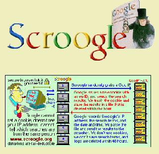

Privacy concerns with Google
Source: https://en.wikipedia.org/wiki/Privacy_concerns_with_Google
Category: company__depth2
Depth: 2
Summary
Privacy concerns with Google include a wide range of issues and controversies related to collection, use, and sharing of user data across Google products, services, and platforms, including Google Search. Since the mid-2000s, civil liberties organizations and government regulators have criticized and taken action against Google related to Internet privacy issues in its data collection and data retention policies, web tracking practices, cooperation with intelligence agencies and law enforcement agencies, and other activities. These concerns are a frequent theme in criticism of Google.
Images

Full Article
Privacy concerns with Google include a wide range of issues and controversies related to collection, use, and sharing of user data across Google products, services, and platforms, including Google Search. Since the mid-2000s, civil liberties organizations and government regulators have criticized and taken action against Google related to Internet privacy issues in its data collection and data retention policies, web tracking practices, cooperation with intelligence agencies and law enforcement agencies, and other activities. These concerns are a frequent theme in criticism of Google.
History
In 2007, Privacy International raised concerns regarding the dangers and privacy implications of having a centrally located, widely popular data warehouse of millions of Internet users' searches, and how under controversial existing U.S. law, Google can be forced to hand over all such information to the U.S. government. In its 2007 Consultation Report, Privacy International ranked Google as "Hostile to Privacy", its lowest rating on their report, making Google the only company in the list to receive that ranking.
Around December 2009, after privacy concerns were raised, Google's CEO Eric Schmidt declared: "If you have something that you don't want anyone to know, maybe you shouldn't be doing it in the first place. If you really need that kind of privacy, the reality is that search engines—including Google—do retain this information for some time and it's important, for example, that we are all subject in the United States to the Patriot Act and it is possible that all that information could be made available to the authorities." At the Techonomy conference in 2010, Eric Schmidt predicted that "true transparency and no anonymity" is the path to take for the Internet: "In a world of asynchronous threats it is too dangerous for there not to be some way to identify you. We need a [verified] name service for people. Governments will demand it." He also said that: "If I look at enough of your messaging and your location, and use artificial intelligence, we can predict where you are going to go. Show us 14 photos of yourself and we can identify who you are. You think you don't have 14 photos of yourself on the internet? You've got Facebook photos!"
Google's changes to its privacy policy in March 2012 enabled the company to share data across a wide variety of services. These embedded services include millions of third-party websites that use AdSense and Analytics. The policy was widely criticized for creating an environment that discourages Internet innovation by making Internet users more fearful and wary of what they do online.
In the summer of 2016, Google quietly dropped its ban on personally-identifiable info in its DoubleClick ad service. Google's privacy policy was changed to state it "may" combine web-browsing records obtained through DoubleClick with what the company learns from the use of other Google services. While new users were automatically opted-in, existing users were asked if they wanted to opt-in, and it remains possible to opt-out by going to the "Activity controls" in the "My Account" page of a Google account. ProPublica stated that "The practical result of the change is that the DoubleClick ads that follow people around on the web may now be customized to them based on your name and other information Google knows about you. It also means that Google could now, if it wished to, build a complete portrait of a user by name, based on everything they write in email, every website they visit and the searches they conduct." Google contacted ProPublica to correct the fact that it didn't "currently" use Gmail keywords to target web ads.
Shona Ghosh, a journalist for Business Insider, noted in 2019 that an increasing digital resistance movement against Google had grown. A major hub for critics of Google in order to organize to abstain from using Google products is the Reddit page for the subreddit r/degoogle. The Electronic Frontier Foundation (EFF), a nonprofit organization which deals with civil liberties, raised concerns in 2018 regarding privacy issues pertaining to student data after conducting a survey which showed that a majority of parents, students and teachers are concerned that student privacy is being breached. According to the EFF, the Federal Trade Commission has ignored complaints from the public that Google has been harvesting student data and search results even after holding talks with the Department of Education in 2018.
In 2019, Google blocked World Wide Web Consortium (W3C) privacy proposals using their veto power. The W3C decides how the World Wide Web works, and Google vetoed a measure to expand W3C's power within its internet privacy group.
Potential for data disclosure
Data leaks
On March 10, 2009, Google reported that a bug in Google Docs had allowed unintended access to some private documents. It was believed by PCWorld that 0.05% of all documents stored via the service were affected by the bug. Google stated the bug has now been fixed.
Cookies
Google places one or more cookies on each user's computer, which is used to track a person's web browsing on a large number of unrelated websites and track their search history. If a user is logged into a Google service, Google also uses the cookies to record which Google Account is accessing each website and doing each search. Originally the cookie did not expire until 2038, although it could be manually deleted by the user or refused by setting a browser preference. As of 2007, Google's cookie expired in two years, but renewed itself whenever a Google service is used. This also affected the opt-out at Google's Ads Preferences Manager, which meant that users who thought they had opted out were automatically opted back in after visiting a Google service or website, including YouTube. As of 2011, Google said that it anonymizes the IP address data that it collects, after nine months, and the association between cookies and web accesses after 18 months. As of 2016, Google's privacy policy does not promise anything about whether or when its records about the users' web browsing or searching are deleted from its records.
The non-profit group Public Information Research launched Google Watch, a website advertised as "a look at Google's monopoly, algorithms, and privacy issues." The site raised questions relating to Google's storage of cookies, which in 2007 had a life span of more than 32 years and incorporated a unique ID that enabled creation of a user data log. Google faced criticism with its release of Google Buzz, Google's version of social networking, where Gmail users had their contact lists automatically made public unless they opted out.
Google shares this information with law enforcement and other government agencies upon receiving a request. The majority of these requests do not involve review or approval by any court or judge.
Tracking
Google is suspected of collecting and aggregating data about Internet users through the various tools it provides to developers, such as Google Analytics, Google Play Services, reCAPTCHA, Google Fonts, and Google APIs. This could enable Google to determine a user's route through the Internet by tracking the IP address being used through successive sites (cross-domain web tracking), However the fourth generation of Google Analytics claims that it drops any IP information from EU users.[independent source needed] Linked to other information made available through Google APIs, which are widely used, Google might be able to provide a quite complete web user profile linked to an IP address or user. This kind of data is invaluable for marketing agencies, and for Google itself to increase the efficiency of its own marketing and advertising activities.
Google encourages developers to use their tools and to communicate end-user IP addresses to Google: "Developers are also encouraged to make use of the userip parameter to supply the IP address of the end-user on whose behalf you are making the API request. Doing so will help distinguish this legitimate server-side traffic from traffic which doesn't come from an end-user." reCAPTCHA uses the google.com domain instead of one specific to reCAPTCHA. This allows Google to receive any cookies that they have already set for the user, effectively bypassing restrictions on setting third party cookies and allowing traffic correlation with all of Google's other services, which most users use. reCAPTCHA collects enough information that it could reliably de-anonymize many users that simply wish to prove that they are not a robot.
Google has many sites and services that makes it difficult to track where the information could be viewed online. Following the continuous backlash over aggressive tracking and unknown data retention periods, Google has tried to appeal to a growing number of privacy conscious people. At Google I/O 2019, it announced plans to limit the data retention period for some of it services, starting with Web and App Activity. Users can select from between 3 months to 18 months within the Google Account Dashboard. The data retention period limit is disabled by default.
Gmail
Main articles: Gmail and Criticism of Gmail
After Google released the Gmail service in 2004, several people, including Microsoft CEO Steve Ballmer, Senator Liz Figueroa, and The Register columnist Mark Rasch, criticized the processing of email message content as going beyond proper use.
Google Inc. claims that mail sent to or from Gmail is never read by a human being other than the account holder, and content that is read by computers is only used to improve the relevance of advertisements and block spam emails. The privacy policies of other popular email services, like Outlook.com and Yahoo, allow users' personal information to be collected and utilized for advertising purposes.
In 2004, thirty-one privacy and civil liberties organizations wrote a letter calling upon Google to suspend its Gmail service until the privacy issues were adequately addressed. The letter also called upon Google to clarify its written information policies regarding data retention and data sharing among its business units. The organizations voiced their concerns about Google's plan to scan the text of all incoming messages for the purposes of ad placement, noting that the scanning of confidential email for inserting third party ad content violates the implicit trust of an email service provider.
In 2013, Microsoft launched an advertising campaign to attack Google for scanning email messages, arguing that most Gmail users are not aware that Google monitors their personal messages to deliver targeted ads. Microsoft claims that its email service Outlook does not scan the contents of messages and a Microsoft spokesperson called the issue of privacy "Google's kryptonite." Other concerns include the unlimited period for data retention that Google's policies allow, and the potential for unintended secondary uses of the information Gmail collects and stores.
A court filing uncovered by advocacy group Consumer Watchdog in August 2013 revealed that Google stated in a court filing that no "reasonable expectation" exists among Gmail users in regard to the assured confidentiality of their emails. According to the British Newspaper, The Guardian, "Google's court filing was referring to users of other email providers who email Gmail users – and not to the Gmail users themselves". In response to a lawsuit filed in May 2013, Google explained:
... all users of email must necessarily expect that their emails will be subject to automated processing ... Just as a sender of a letter to a business colleague cannot be surprised that the recipient's assistant opens the letter, people who use web-based email today cannot be surprised if their communications are processed by the recipient's ECS [electronic communications service] provider in the course of delivery.
A Google spokesperson stated to the media on August 15, 2013, that the corporation takes the privacy and security concerns of Gmail users "very seriously."
A Federal Judge declined to dissolve a lawsuit made by Gmail users who opposed to the use of analyzing the content of the messenger by selling byproducts.
In 2017, Google stopped personalizing Gmail ads.
CIA and NSA ties
In February 2010, Google was reported to be working on an agreement with the National Security Agency (NSA) to investigate recent attacks against its network. While the deal did not give the NSA access to Google's data on users' searches or e-mail communications and accounts and Google was not sharing proprietary data with the agency, privacy and civil rights advocates were concerned.
In October 2004, Google acquired Keyhole, a 3D mapping company. In February 2004, before its acquisition by Google, Keyhole received an investment from In-Q-Tel, the CIA's investment arm. And in July 2010 it was reported that the investment arms of both the CIA (In-Q-Tel) and Google (Google Ventures) were investing in Recorded Future, a company specializing in predictive analytics—monitoring the web in real time and using that information to predict the future. Private corporations have been using similar systems since the 1990s, but the involvement of Google and the CIA, with their large data stores, raised privacy concerns.
In 2011, a federal district court judge in the United States turned down a Freedom of Information Act request, submitted by the Electronic Privacy Information Center. In May 2012, a Court of Appeals upheld the ruling. The request attempted to disclose NSA records regarding the 2010 cyber-attack on Google users in China. The NSA stated that revealing such information would make the US Government information systems vulnerable to attack. The NSA refused to confirm or deny the existence of the records, or the existence of any relationship between the NSA and Google.
Leaked NSA documents obtained by The Guardian and The Washington Post in June 2013 included Google on the list of companies that cooperate with the NSA's PRISM surveillance program, which authorizes the government to secretly access data of non-US citizens hosted by American companies without a warrant. Following the leak, government officials acknowledged the existence of the program. According to the leaked documents, the NSA has direct access to servers of those companies, and the amount of data collected through the program had been growing fast in years prior to the leak. Google has denied the existence of any "government backdoor".
Government requests
Google has been criticized both for disclosing too much information to governments too quickly and for not disclosing information that governments need to enforce their laws. In April 2010, Google, for the first time, released details about how often countries around the world ask it to hand over user data or to censor information. Online tools make the updated data available to everyone.
Between July and December 2009, Brazil topped the list for user data requests with 3,663, while the US had made 3,580, the UK 1,166, and India 1,061. Brazil also made the largest number of requests to remove content with 291, followed by Germany with 188, India with 142, and the US with 123. Google, which stopped offering search services in China a month before the data was released, said it could not release information on requests from the Chinese government because such information is regarded as a state secret.
Google's chief legal officer said, "The vast majority of these requests are valid, and the information needed is for legitimate criminal investigations or for the removal of child pornography".
On March 20, 2019, the U.S. Supreme Court risked an $8.5 million settlement which Google formed to fix a lawsuit with the claims of invading their privacy.[clarification needed]
In a 2023 letter, Senator Ron Wyden expressed concern that governments were seeking push notification records from Google.
Google Chrome
In 2008, Consumer Watchdog produced a video showing how Google Chrome records what a user types into the web address field and sends that information to Google servers to populate search suggestions. The video includes discussion regarding the potential privacy implications of this feature.
Google Chrome includes a private browsing feature called "incognito mode" that prevents the browser from permanently storing any browsing or download history information or cookies. Using incognito mode prevents storage of pages visited in the browser's history. However, the individual websites visited can still track and store information about visits. In particular, any searches performed while signed into a Google account will be saved as part of the account's web history. In addition, other programs such as those used to stream media files, which are invoked from within Chrome, may still record history information, even when incognito mode is being used. Furthermore, a limitation of Apple's iOS 7 platform allows some information from incognito browser windows to leak to regular Chrome browser windows. There are concerns that these limitations may have led Chrome users to believe that incognito mode provides more privacy protection than it actually does.
Street View
Main articles: Google Street View and Google Street View privacy concerns
Google's online map service, Street View, has been found guilty of retrieving emails and other personal data in the streets ("payload data"), taking pictures and viewing too far into people's private homes and/or too close to people on the street when they do not know they are being photographed.
Wi-Fi networks information collection
From 2006 to 2010, Google Street View camera cars collected about 600 gigabytes of data from users of unencrypted public and private Wi-Fi networks in more than 30 countries. No disclosures nor privacy policy was given to those affected, nor to the owners of the Wi-Fi stations.
Google apologized and said that they were "acutely aware that we failed badly here" in terms of privacy protection, that they were not aware of the problem until an inquiry from German regulators was received, that the private data was collected inadvertently, and that none of the private data was used in Google's search engine or other services. A representative of Consumer Watchdog replied, "Once again, Google has demonstrated a lack of concern for privacy. Its computer engineers run amok, push the envelope and gather whatever data they can until their fingers are caught in the cookie jar." In a sign that legal penalties may result, Google said it will not destroy the data until permitted by regulators., but then failed to do so in eleven countries.
The Street View data collection prompted several lawsuits in the United States. The suits were consolidated into one case before a California federal court. Google's motion to have the case dismissed, saying the Wi-Fi communications it captured were "readily accessible to the general public" and therefore not a violation of federal wiretapping laws, was rejected in June 2011 by the U.S. District Court for the Northern District of California and upon appeal in September 2013 by the U.S. Court of Appeals for the Ninth Circuit. The ruling is viewed as a major legal setback for Google and allows the case to move back to the lower court for trial.
Currently Google no longer collects WiFi data via Street View, instead using an Android device's Wi-Fi positioning system; however, they have suggested the creation of a unified approach for opting-out from Wi-Fi-based positioning systems, suggesting the usage of the word "nomap" appended to a wireless access point's SSID to exclude it from Google's WPS database.
YouTube
Main article: YouTube and privacy
On July 14, 2008, Viacom compromised to protect YouTube users' personal data in their $1 billion copyright lawsuit. Google agreed it will anonymize user information and internet protocol addresses from its YouTube subsidiary before handing the data over to Viacom. The privacy deal also applied to other litigants including the FA Premier League, the Rodgers & Hammerstein organization and the Scottish Premier League. The deal however did not extend the anonymity to employees, because Viacom wishes to prove that Google staff are aware of the uploading of illegal material to the site. The parties therefore will further meet on the matter lest the data be made available to the court. YouTube was forced to pay $170 million and implement new privacy systems to the FTC following a complaint about the platform's enforcement of the Children's Online Privacy Protection Act.
Google Buzz
Main article: Google Buzz
On February 9, 2010, Google launched Google Buzz, Google's microblogging service. Anyone with a Gmail account was automatically added as a contact to pre-existing Gmail contacts, and had to opt out if they did not wish to participate.
The launch of Google Buzz as an "opt-out" social network immediately drew criticism for violating user privacy because it automatically allowed Gmail users' contacts to view their other contacts. In 2011, the United States Federal Trade Commission initiated a Commission proceeding against respondent Google, Inc., alleging that certain personal information of Gmail users was shared without users' permission through the Google Buzz social network.
Real names, Google+, and Nymwars
Main article: Nymwars
Google Plus (G+) was launched in late June 2011. The new service gained 20 million members in just a few weeks. At the time of launch, the site's user content and conduct policy stated, "To help fight spam and prevent fake profiles, use the name your friends, family or co-workers usually call you." Starting in July 2011, Google began enforcing this policy by suspending the accounts of those who used pseudonyms. Starting in August 2011, Google provided a four-day grace period before enforcing the real name policy and suspending accounts. The four days allowed members time to change their pen name to their real name. The policy extended to new accounts for all of Google services, including Gmail and YouTube, although accounts existing before the new policy were not required to be updated. In late January 2012 Google began allowing members to use nicknames, maiden names, and other "established" names in addition to their common or real names.
According to Google, the real name policy makes Google more like the real world. People can find each other more easily, like a phone book. The real name policy is believed to protect children and young adults from cyber-bullying, as those bullies hide behind pen names, but this view fails to acknowledge that people may also hide from bullies by using nicknames not known to others. There is considerable use of search engines for "people-searching", attempting to find information on persons by performing a search of their name.
A number of high-profile commentators have publicly criticized Google's policies, including technologists Jamie Zawinski, Kevin Marks, and Robert Scoble and organizations such as the Electronic Frontier Foundation.
Criticisms have been wide-ranging, for example:
- The policy is not like the real world, because real names and personal information are not known to everyone in the off-line world.
- The policy fails to acknowledge long-standing Internet culture and conventions.
- Using real names online can disadvantage or endanger some individuals, such as victims of violence or harassment. The policy prevents users from protecting themselves by hiding their identity. For example, a person who reports a human rights violation or crime and posts it on YouTube can no longer do so anonymously. The dangers include possible hate crimes, retaliation against whistle-blowers, executions of rebels, religious persecution, and revenge against victims or witnesses of crimes.
- Using a pseudonym is different from anonymity, and a pseudonym used consistently denotes an "authentic personality".
- Google's arguments fail to address the financial gain represented by connecting personal data to real-world identities.
- Google has inconsistently enforced their policy, especially by making exceptions for celebrities using pseudonyms and mononyms.
- The policy as stated is insufficient for preventing spam.
- The policy may run afoul of legal constraints such as the German "Telemediengesetz" federal law, which makes anonymous access to online services a legal requirement.
- The policy does not prevent trolls. It is up to social media to encourage the growth of healthy social norms, and forcefully telling people how they must behave cannot be efficient.
Do Not Track
Main articles: Do Not Track, Do Not Track legislation, and Google Chrome
In April 2011, Google was criticized for not signing onto the Do Not Track feature for Chrome that was being incorporated in most other modern web browsers, including Firefox, Internet Explorer, Safari, and Opera. Critics pointed out that a new patent Google was granted in April 2011, for greatly enhanced user tracking through web advertising, will provide much more detailed information on user behavior and that do not track would hurt Google's ability to exploit this. Software reviewer Kurt Bakke of Conceivably Tech wrote:
Google said that it intends to charge advertisers based on click-through rates, certain user activities and a pay-for-performance model. The entire patent seems to fit Google's recent claims that Chrome is critical for Google to maintain search dominance through its Chrome web browser and Chrome OS and was described as a tool to lock users to Google's search engine and – ultimately – its advertising services. So, how likely is it that Google will follow the do-not-track trend? Not very likely.
Mozilla developer Asa Dotzler noted: "It seems pretty obvious to me that the Chrome team is bowing to pressure from Google's advertising business and that's a real shame. I had hoped they'd demonstrate a bit more independence than that."
At the time of the criticisms, Google argued that the technology is useless, as advertisers are not required to obey the user's tracking preferences and it remains unclear as to what constitutes tracking (as opposed to storing statistical data or user preferences). As an alternative, Google continues to offer an extension called "Keep My Opt-Outs" that permanently prevents advertising companies from installing cookies on the user's computer.
The reaction to this extension was mixed. Paul Thurrott of Windows IT Pro called the extension "much, much closer to what I've been asking for—i.e. something that just works and doesn't require the user to figure anything out—than the IE or Firefox solutions" while lamenting the fact that the extension is not included as part of the browser itself.
In February 2012, Google announced that Chrome would incorporate a Do Not Track feature by the end of 2012, and it was implemented in early November 2012.
Moreover, Pól Mac and Douglas J. (2016) in their study “Don’t Let Google Know I’m Lonely”, presented strong evidence that the two giant techs have very high accuracy while providing results based on user's sensitive entries. Pól Mac and Douglas J. (2016) specifically focused on user's financial and sexual preferences and they have concluded that "For Google, 100% of user sessions on a sensitive topic reject the hypothesis that no learning of the sensitive topic by the search engine has taken place and so are identified as sensitive. For Bing, the corresponding detection rate is 91%."
Scroogle
"Scroogle" redirects here. For Microsoft's 2012 advertising campaign that targeted Google, see Scroogled.
Scroogle, named after the fictional character Ebenezer Scrooge, was a web service that allowed users to perform Google searches anonymously. It focused heavily on searcher privacy by blocking Google cookies and not saving log files. The service was launched in 2003 by Google critic Daniel Brandt, who was concerned about Google collecting personal information on its users.
Scroogle offered a web interface and browser plugins for Firefox, Google Chrome, and Internet Explorer that allowed users to run Google searches anonymously. The service scraped Google search results, removing ads and sponsored links. Only the raw search results were returned, meaning features such as page preview were not available. For added security, Scroogle gave users the option of having all communication between their computer and the search page be SSL encrypted.
Although Scroogle's activities technically violated Google's terms of service, Google generally tolerated its existence, whitelisting the site on multiple occasions. After 2005, the service encountered rapid growth before running into a series of problems starting in 2010. In February 2012, the service was permanently shut down by its creator due to a combination of throttling of search requests by Google and a denial-of-service attack by an unknown person or group.
Before its demise, Scroogle handled around 350,000 queries daily, ranked among the top 4,000 sites worldwide and in the top 2,500 for the United States, Canada, the United Kingdom, Australia, and other countries in web traffic.
Incorrect specifications
Google Nest hidden microphone incident
Further information: Google Nest
In February 2019, a privacy incident involving the Google Nest Guard system went public. The controversy stemmed from the fact that Nest Guard, a security device that was part of the Nest Secure system, contained a hidden microphone that was not disclosed in any product specifications. It resulted in a public relations failure. Google dismissed this as an "error" and claimed the microphone was never activated without user permission.
Location data
See also: Sensorvault
Google's collection of location data has been criticized for enabling geofence warrants.
Privacy and data protection cases and issues by country
European Union
European Union (EU) data protection officials (the Article 29 working party who advise the EU on privacy policy) have written to Google asking the company to justify its policy of keeping information on individuals' internet searches for up to two years. The letter questioned whether Google has "fulfilled all the necessary requirements" on the EU laws concerning data protection. On May 31, 2007, Google agreed that its privacy policy was vague, and that they were constantly working at making it clearer to users.
After Google merged its different privacy policies into a single one in March 2012, the working group of all European Union Data Protection Authorities assessed that it failed to comply with the EU legal framework. Several countries then opened cases to investigate possible breach of their privacy rules.
Google has also been implicated in Google Spain v AEPD and Mario Costeja González, a case before the Audiencia Nacional (Spain's national court) and the European Court of Justice, which required Google to comply with the European privacy laws (i.e., the Data Protection Directive) and to allow users to be forgotten when operating in the European Union.
Czech Republic
Starting in 2010, after more than five months of unsuccessful negotiations with Google, the Czech Office for Personal Data Protection prevented Street View from taking pictures of new locations. The Office described Google's program as taking pictures "beyond the extent of the ordinary sight from a street", and claimed that it "disproportionately invaded citizens' privacy." Google resumed Street View in Czech Republic in 2012 after having agreed to a number of limitations similar to concessions Google has made in other countries.
France
| This section needs to be updated. The reason given is: Update the paragraph regarding Google's plan to appeal to the Conseil d'Etat. Please help update this article to reflect recent events or newly available information. (December 2020) |
In January 2014, the French authority, CNIL sanctioned Google, requiring it to pay their highest fee and to display on its search engine website a banner referring to the decision. Google complied but appealed to the Conseil d'État, France’s highest administrative court. That same year, French and German companies formed the Open Internet Project to oppose Google’s alleged favoritism of its own services.
In 2019, CNIL fined Google €50 million for failing to clearly inform users and obtain valid consent for personalized ads under the GDPR. The Conseil d'État upheld the fine in 2020.
In 2020, Google was fined €100 million for placing advertising cookies without user consent. This fine was confirmed in 2022 by the Conseil d'État.
In 2022, CNIL fined Google €150 million for Google making it difficult for users to opt out of tracking. Google later complied by adding a “Reject All” button to its websites.
Germany
In May 2010, Google was unable to meet a deadline set by Hamburg's data protection supervisor to hand over data illegally collected from unsecured home wireless networks. Google added, "We hope, given more time, to be able to resolve this difficult issue." The data was turned over to German, French, and Spanish authorities in early June 2010.
In November 2010, vandals in Germany targeted houses that had opted out of Google's Street View.
In April 2011, Google announced that it will not expand its Street View program in Germany, but what has already been photographed—around 20 cities' worth of pictures—will remain available. This decision came despite an earlier Berlin State Supreme Court ruling that Google's Street View program was legal.
In September 2014, a top official in Germany called for Google to be broken up as publishers were fighting in court over compensation for the snippets of text that appear with Google News updates. The chief executive of Axel Springer, a German publishing giant, expressed fears over Google's growing influence in the country.
Italy
In February 2010, in a complaint brought by an Italian advocacy group for people with Down's Syndrome, Vividown, and the boy's father, three Google executives were handed six-month suspended sentences for breach of the Italian Personal Data Protection Code in relation to a video, uploaded to Google Video in 2006, of a disabled boy being bullied by several classmates. In December 2012, these convictions and sentences were overturned on appeal.
Norway
The Data Inspectorate of Norway (Norway is not a member of the EU) investigated Google (and others) and stated that the 18- to 24-month period for retaining data proposed by Google was too long.
United Kingdom
On March 27, 2015, the Court of Appeal ruled that British persons have the right to sue Google in the UK for misuse of private information.
United States
In early 2005, the United States Department of Justice filed a motion in federal court to force Google to comply with a subpoena for "the text of each search string entered onto Google's search engine over a two-month period (absent any information identifying the person who entered such query)." Google fought the subpoena, due to concerns about users' privacy. In March 2006, the court ruled partially in Google's favor, recognizing the privacy implications of turning over search terms and refusing to grant access.
In April 2008, a Pittsburgh couple, Aaron and Christine Boring, sued Google for "invasion of privacy". They claimed that Street View made a photo of their home available online, and it diminished the value of their house, which was purchased for its privacy. They lost their case in a Pennsylvania court. "While it is easy to imagine that many whose property appears on Google's virtual maps resent the privacy implications, it is hard to believe that any – other than the most exquisitely sensitive – would suffer shame or humiliation," Judge Hay ruled; the Boring family was paid one dollar by Google for the incident.
In May 2010, a U.S. District Court in Portland, Oregon ordered Google to hand over two copies of wireless data that the company's Street View program collected as it photographed neighborhoods.
In 2012 and 2013, Google reached two settlements over tracking people online without their knowledge after bypassing privacy settings in Apple's Safari browser. The first was a settlement in August 2012 for $22.5 million with the Federal Trade Commission—the largest civil penalty the FTC has ever obtained for a violation of a Commission order. The second was a November 2013 settlement for $17 million with 37 states and the District of Columbia. In addition to the fines, Google agreed to avoid using software that overrides a browser's cookie-blocking settings, to avoid omitting or misrepresenting information to individuals about how they use Google products or control the ads they see, to maintain for five years a web page explaining what cookies are and how to control them, and to ensure that the cookies tied to Safari browsers expire. In both settlements Google denied any wrongdoing, but said it discontinued circumventing the settings early in 2012, after the practice was publicly reported, and stopped tracking Safari users and showing them personalized ads.
In September 2019, Google was fined $170 million by the Federal Trade Commission in New York for violation of COPPA regulations on its YouTube platform. YouTube was required to add a feature to allow video uploaders to flag videos made for users under 13 years old. Adverts were prohibited in videos flagged as such. YouTube was also required to ask for parents' permission before collecting personal information from children.
See also
- Google litigation
- Googlization
- History of Google
- Criticism of Facebook
- Criticism of Microsoft
- Criticism of Yahoo!
- Distributed search engine
- Internet privacy
- Privacy concerns with social networking services
References
External links
- "Google's Email Service 'Gmail' Sacrifices Privacy for Extra Storage Space", Privacy Rights Clearinghouse, April 2, 2004
- "Privacy Group Flunks Google", Lisa Vaas, eWeek.com, June 12, 2007
- "Who's afraid of Google?", The Economist, August 30, 2007
- "Googlist Realism: The Google-China saga and the free-information regimes as a new site of cultural imperialism and moral tensions", Tricia Wang, Cultural Bytes, June 29, 2010
- "How to Remove Your Google Search History Before Google's New Privacy Policy Takes Effect", Eva Galperin, Electronic Frontier Foundation, February 21, 2012
| - v - t - e Google | |
|---|---|
| a subsidiary of Alphabet | |
| Company | |
| Development | |
| Software | |
| Hardware | |
| - v - t - e Litigation | |
| Related | |
| Italics denote discontinued products. - Category - Outline |